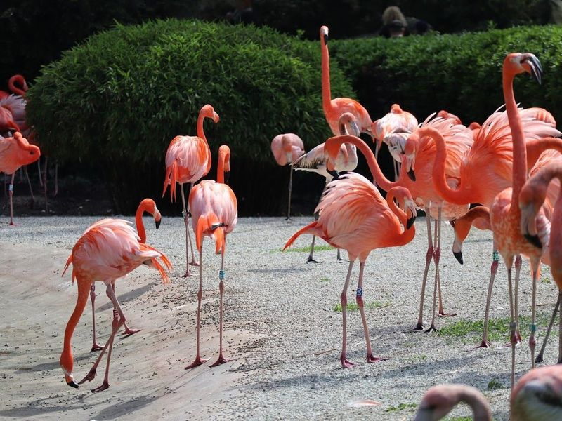
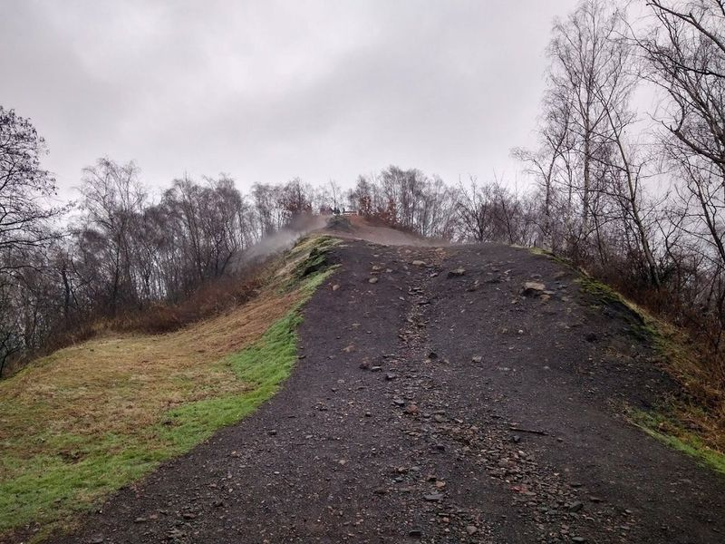
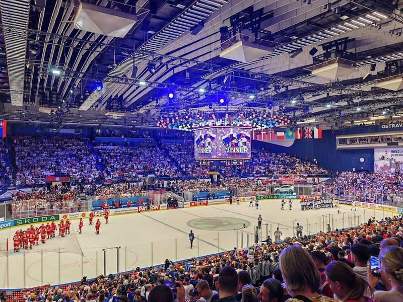
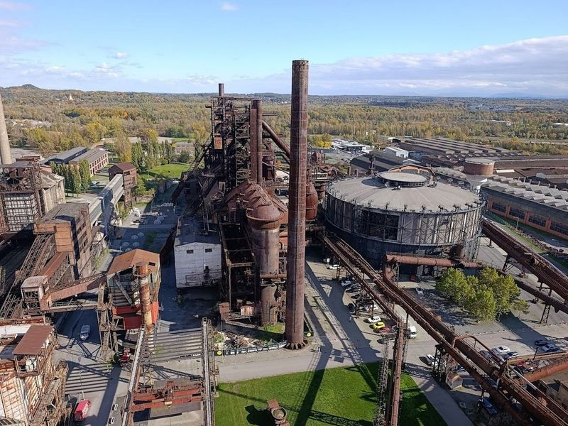
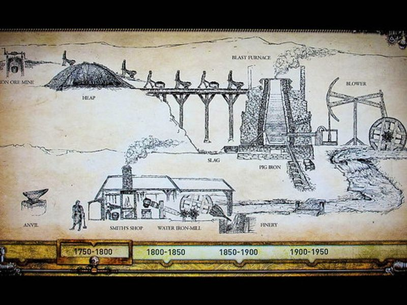
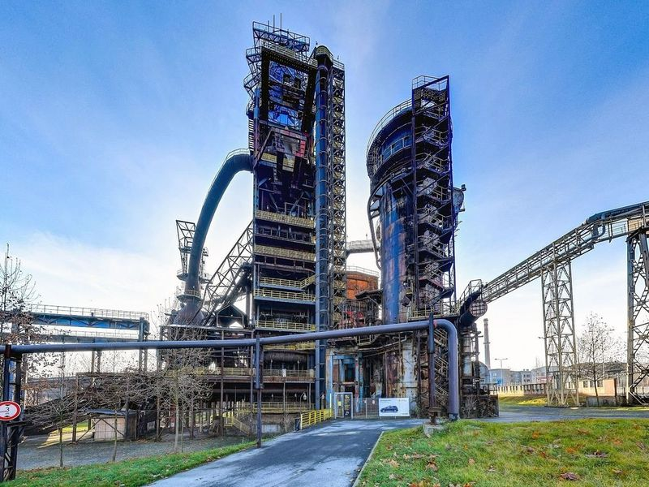
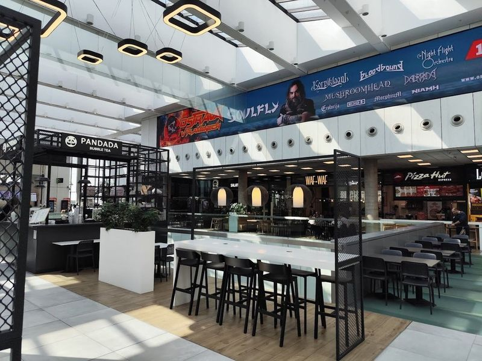
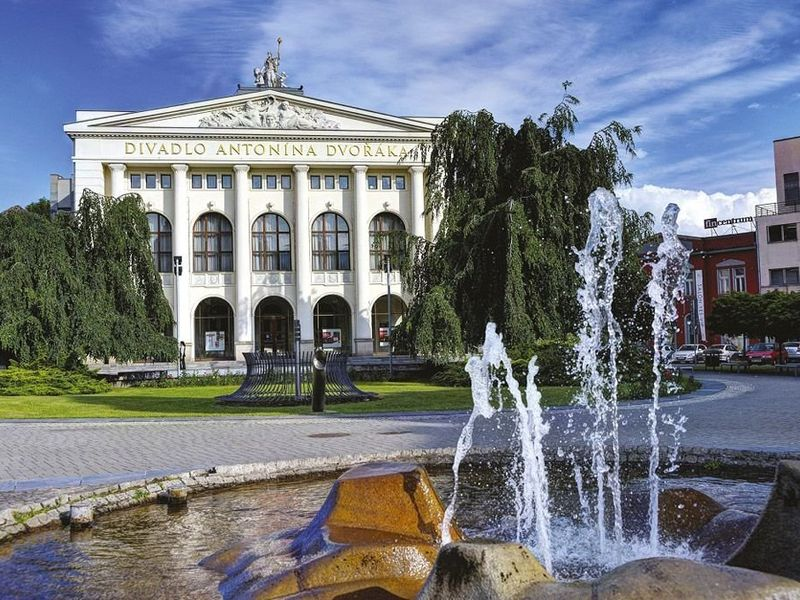
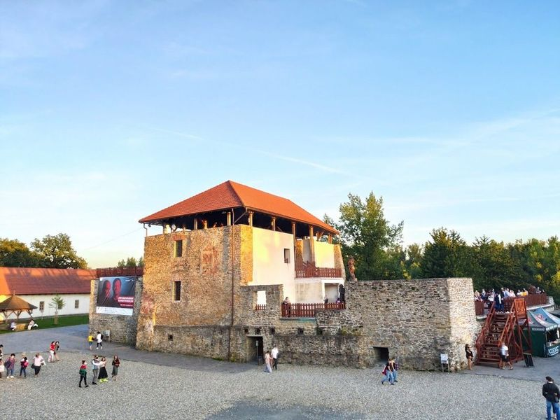

Explore Ostrava
A Brief History
Ostrava expanded in the nineteenth century when coal seams and ironworks of the Moravian-Silesian basin drew migrants to furnaces owned by the Rothschilds and later Czechoslovak state firms. The confluence of the Ostravice and Odra became a landscape of shafts, slag heaps, and workers' districts that peaked under socialism before deindustrialisation. Heritage routes through Dolní Vítkovice and the mining museum now interpret how heavy industry shaped this border city near Poland.
Attractions Map
Top Sights & Activities

Ostrava Zoo
Ostrava Zoo, the Czech Republic's second-largest zoo, is home to approximately 3000 animals, including bears and elephants. It offers a petting zoo and kids' playgrounds for a family-friendly experience. The zoo holds EEP and EAZA membership, ensuring it meets European ethical standards and focuses on education. travellers can explore the new House of Evolution, featuring a multi-environment exhibition with over 200 species.

Halda Ema
Halda Ema is a 315-meter hill in Ostrava, Czech Republic, formed from mining waste. It's a 45-60 minute walk from the city center and offers sweeping views, especially at sunset. The climb is manageable and popular for hiking and mountain biking. The hill features a forest grown on coal mine ruins, but as you ascend, the forest thins due to heat from coal and natural gas trapped inside.

Ostravar Aréna
Ostravar Aréna is a renowned ice hockey venue with a capacity of 10,000, located near the city center. It has hosted prestigious events like the World Championships in 2004 and 2015. Home to HC Vitkovice Steel, a team dating back to 1928, it offers an exhilarating atmosphere during the autumn to spring season. Even for non-hockey enthusiasts, attending a game here can be enjoyable as fans create an electric ambiance.

The lower Vítkovice Area
The Lower Vítkovice Area in Ostrava is a massive industrial heritage site that has been transformed into a dynamic cultural and educational center. It features furnace tours, a mining museum, and hosts concerts within a former gas container. This area is part of the 5-day road trip starting in Ostrava, offering travellers an opportunity to explore the region's rich history and beauty.

The Small World Of Technology U6
An interactive museum focusing on the history of technology and industry, with a range of exhibits and hands-on activities for all ages. The site is catalogued as a tourist attraction. The Small World Of Technology U6 is listed among principal sites for Ostrava within Czech Republic.

Science & Technology Centrum
An engaging science center offering hands-on exhibits, workshops, and demonstrations in various fields like physics, chemistry, and biology. The site is catalogued as a tourist attraction. Science & Technology Centrum is listed among principal sites for Ostrava within Czech Republic.

Bolt Tower
Bolt Tower in Czechy, located at Dolni Vitkovice, offers a unique experience with its architectural redesign. The former blast furnace no. 1 has been transformed into an 80-meter-tall glass structure, resembling fire reaching the heights of the factory flames. travellers can access the tower via a lift and external walkways to reach the Bolt Cafe, where they can enjoy views of Ostrava while sipping on cocktails or beer.

Forum Nová Karolina
Forum Nová Karolina is a modern glass-fronted shopping and entertainment center In Ostrava. With over 220 shops, a hypermarket, fitness center, cinema, and children's play area, it offers a wide range of global fashion brands and activities for travellers. The mall also features an outdoor terrace where guests can enjoy a meal while taking in city views.

Antonín Dvořák Theatre
The Antonín Dvořák Theatre, a neo-classical opera house, has been an integral part of Czech cultural history since its opening in 1907. Initially hosting only German performances, the theatre was nationalized after World War I and later named after the renowned Czech composer Antonín Dvořák. The theatre's grand neo-baroque architecture provides a magnificent setting for its diverse range of performances, including opera, ballet, and dramatic presentations.

Silesian Ostrava Castle
Silesian Ostrava Castle, located near the confluence of the Ostravice and Lucina rivers in Czech Republic, is a 13th-century Gothic-style castle with Renaissance chateau features. Despite suffering fire damage in the 19th century and devastation during an air bombardment in 1944, it was rebuilt and opened to the public in 2004.